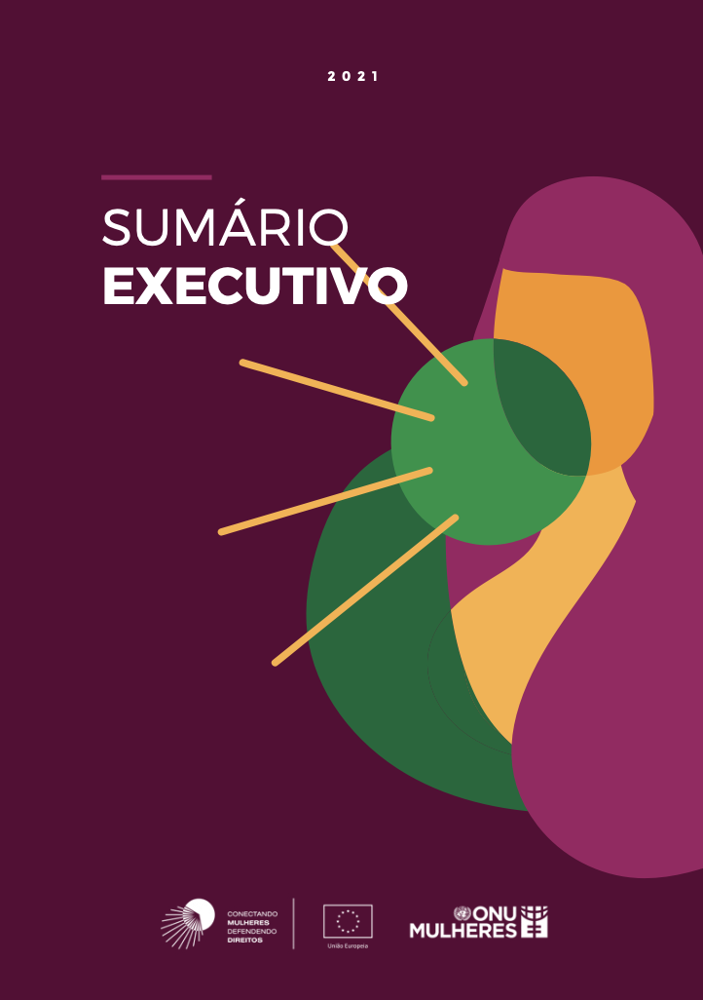
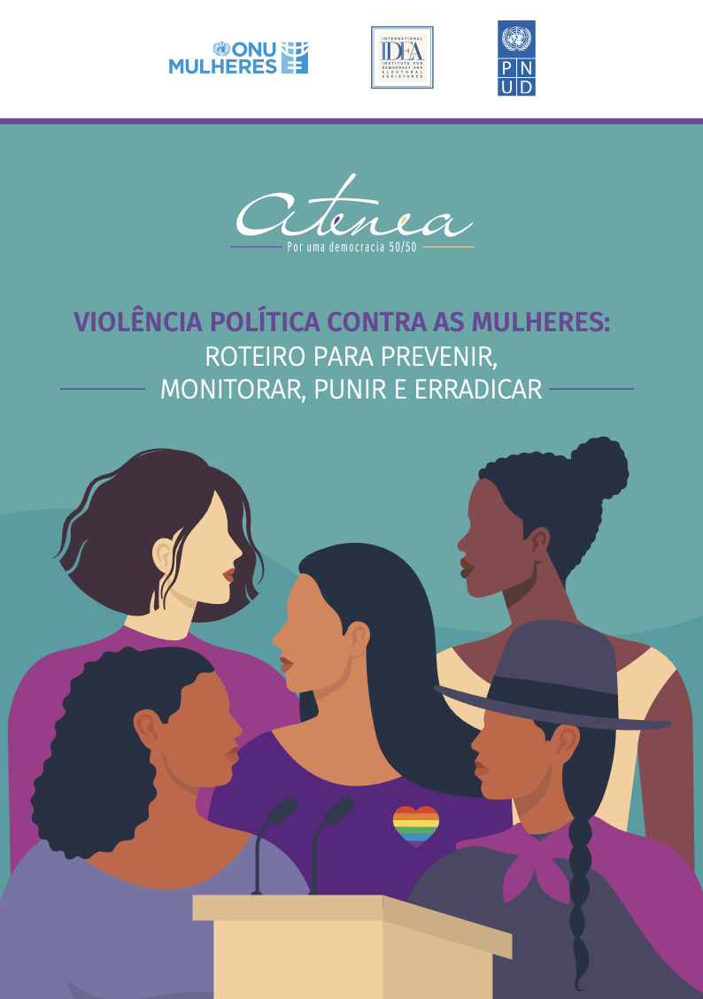

2021 - [Publicação] - Dimensões da violência contra mulheres defensoras de direitos humanos no Brasil - Sumário executivo
Considerando os obstáculos enfrentados por defensoras de direitos humanos, desigual- dades e discriminações estruturais, bem como os níveis de violência dirigida contra elas, em outubro de 2019 a ONU Mulheres iniciou a implementação do projeto “Conectando Mulheres, Defendendo Direitos”. Financiada pela União Europeia e alinhada com a Estratégia global da ONU Mulheres sobre Mulheres Defensoras de Direitos Humanos e com as diretrizes da ONU para pôr fim à violência com base em gênero, a iniciativa tem por objetivo que as mulheres, em toda a sua diversidade, defendam os seus direitos livres de violência e de intimidação. Ano: 2021 Autoria: ONU Mulheres Brasil Área(s) Temática(s): Eliminação da violência contra as mulheres Clique aqui para saber ler a publicação completa.
2021 - [Publicação] - Violência política contra as mulheres: roteiro para prevenir, monitorar, punir e erradicar
A América Latina tem se destacado globalmente pelo importante papel que as mulheres têm desempenhado em cargos de representação política, principalmente no setor legislativo, onde atualmente detêm 30,9% das cadeiras nas câmaras baixas. Embora estes níveis de representati- vidade não sejam equilibrados nem mesmo em níveis subnacionais, ou nos outros poderes do Estado, especialmente no judiciário, há uma forte tendência para que os países desenvolvam medidas para promover a representação das mulheres nos espaços de tomada de decisão. Leis de cotas e leis de paridade têm sido mecanismos essenciais para melhorar o número extremamente baixo de mulheres em espaços de tomada de decisão política, historicamente exibido pela região. Ainda há muito trabalho a ser feito para consolidar o que foi alcançado e avançar em direção a uma maior representação em todos os níveis, assim como para alcançar a justa e necessária paridade que fortalecerá as democracias da região. Ainda estamos muito longe de uma repre- sentação política diversificada que reflita as realidades e identidades de todas as mulheres, incluindo mulheres indígenas, jovens, com deficiências, de diversidade sexual, de afrodescen- dentes e mulheres rurais, entre outras. Ano: 2021 Autoria: ONU Mulheres Brasil, PNUD, IDEA Internacional Área(s) Temática(s): Liderança e participação política Clique aqui para saber ler a publicação completa.